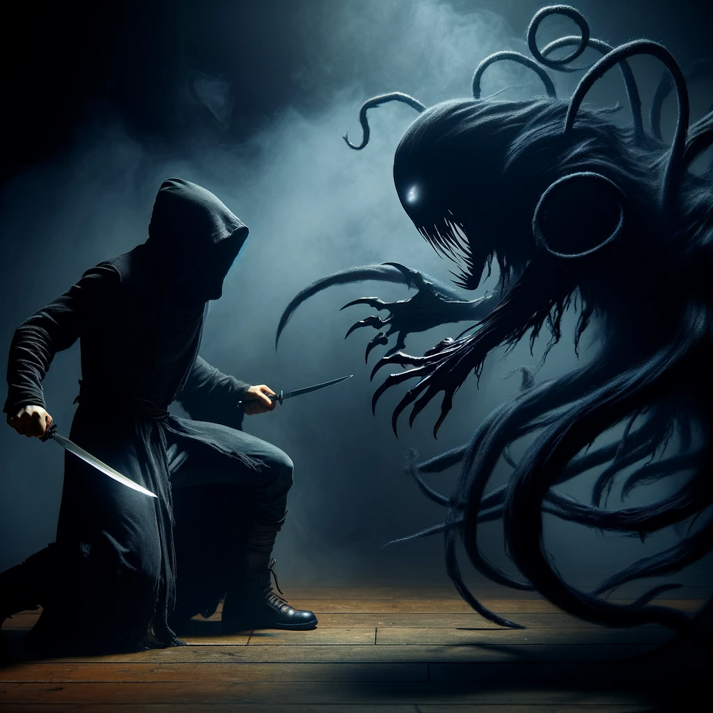
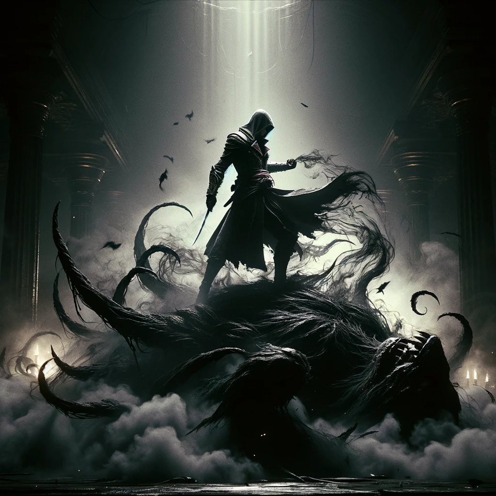

Stealth Against the Formless: The Silent War
In the heart of a world cloaked in darkness, you face the Beast of Shadows, a creature spawned from the deepest nightmares. It moves with eerie grace, its formless body a shifting, writhing mass of darkness, a phantom in the twilight of a shadowy room.
As the embodiment of stealth and cunning, you meld into the darkness, a whisper in the void. The Beast possesses senses honed by centuries of hunting, yet it meets its match in you. With each silent step, you weave a dance of death, striking from the shadows with precision that turns lethality into an art form. Your blades, extensions of your will, find their mark time and again, each attack a stroke of genius against the dark form.
The final act of this silent war unfolds as you set an intricate trap, the culmination of your cunning and knowledge. Using a rare alchemical concoction, a blend of ancient knowledge and assassin's craft, you force the Beast's core into visibility. In that crucial moment, you strike with the ferocity of a vengeful spirit. Your daggers, twin harbingers of doom, plunge into the heart of shadows. The Beast lets out an unearthly howl as it dissipates, its essence unraveling like smoke in the wind.
As the last wisp of darkness fades, you stand alone, the victor in a battle fought in silence and shadows. Your triumph is more than a personal feat; it is a testament to the power of cunning and agility over brute force and fear. The tale of your confrontation with the Beast of Shadows, a symphony of stealth and strategy, will be whispered in awe in the halls of assassins and beyond, a legend of the silent warrior who conquered the formless terror.